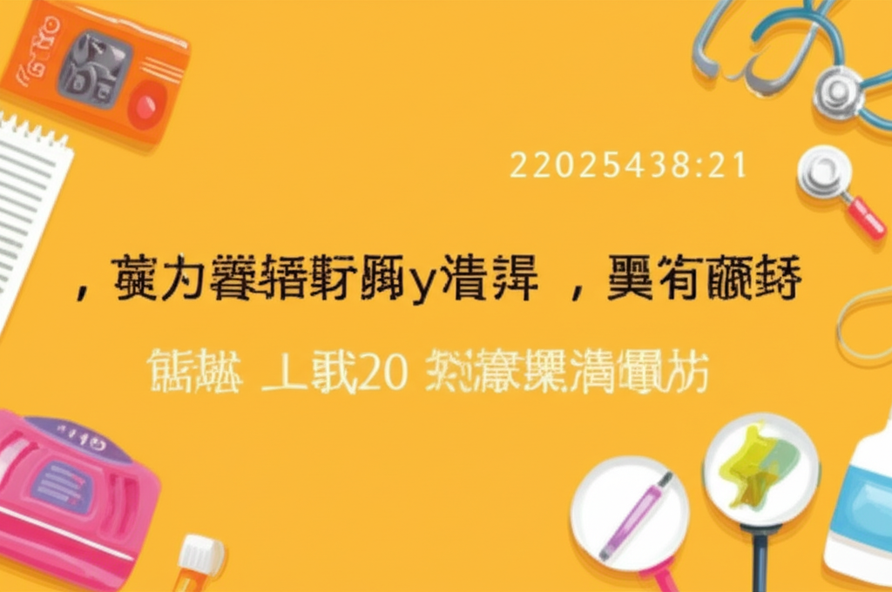

近期健康新聞涵蓋範圍廣泛，從常見的慢性病如高血壓、到危及生命的腦動脈瘤，以及藥物濫用等議題，都引起了社會大眾的高度關注。這些新聞不僅提醒我們關注自身健康，也揭示了台灣醫療健康領域所面臨的挑戰與進展。本文將針對這些新聞進行摘要與分析，希望能提供讀者更全面的健康資訊。
許多新聞都圍繞著高血壓這個主題。例如，新聞提到每四個成人就有一人患有高血壓，強調其作為「沉默殺手」的風險，以及早期預防和控制的重要性。另一則新聞則提到若合併糖尿病、心血管疾病等情況，目標血壓應控制在130／80毫米汞柱以下。還有新聞指出透過介入手段治療高血壓的可能性，以及高血壓導管治療的新選擇。光田綜合醫院的新聞也提醒高血壓、高血脂、糖尿病患者應注意飲食，避免血壓波動。
分析： 高血壓是台灣常見的慢性病，也是心血管疾病的重要風險因素。這些新聞反映了社會對高血壓防治的重視，以及醫療技術在控制高血壓方面的持續進步。民眾應定期量測血壓，並遵循醫囑，透過飲食、運動、藥物等方式，將血壓控制在理想範圍內。
一則新聞報導了一位婦女因頭暈就醫，健檢發現腦動脈瘤的案例，強調腦動脈瘤破裂可能危及生命。
分析： 腦動脈瘤通常沒有明顯症狀，一旦破裂可能導致嚴重的出血性中風，死亡率極高。這則新聞提醒民眾，若有不明原因的頭痛、頭暈等症狀，應及早尋求醫療協助，進行相關檢查，及早發現並治療腦動脈瘤。
蔡語芯打牛奶針（丙泊酚）不治的新聞，揭示了藥物濫用的嚴重性。食藥署指出丙泊酚是「第4級毒品」，並有鎮靜效果，常用於舒眠麻醉等，但使用上必須注意病人的狀況及劑量控制。
分析： 這起事件警惕我們，即使是醫療用途的藥物，也可能被濫用，造成嚴重後果。民眾應提高對藥物風險的認識，切勿自行使用或購買處方藥，應在醫師的指導下安全用藥。
綜觀近期健康新聞，高血壓、腦動脈瘤、藥物濫用等議題都值得我們關注。透過這些新聞，我們得以更了解自身的健康風險，並學習如何預防疾病、保護健康。積極關注健康資訊，定期健康檢查，並建立良好的生活習慣，是維護健康的關鍵。